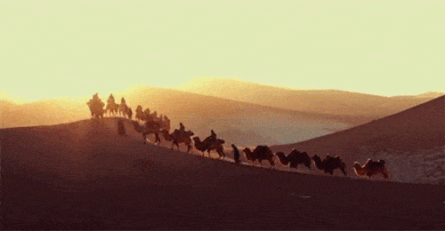

一个42岁的女人，正常人被叫老阿姨的年纪，竟然在3个月的时间里逐渐“返老还童”？！
是什么原因让她变化如此之大？
说出来你可能不信，但这却是发生在上海长宁区李红梅身上的真人真事儿！
这是3个月前，李女士发过来的照片，皮肤粗糙暗黄，没有光泽，还长了点黄褐斑，眼周眼袋明显，还有细纹，嘴角还存在着严重的色素沉着，整个看上去比同龄人还要显老，完全就是一张中年油腻脸。
这是两天前李女士传来的照片，肌肤白嫩，整个人看上去都仿佛年轻了十来岁！！出差许久的丈夫回来看到她，惊得张大嘴巴，第一反应就是觉得妻子去了美容店，甚至还质问妻子：“换这样一张脸是不是连家底都败掉了？！这么大岁数了没个正经！”
面对丈夫的指责，李女士忍不住大笑说：“你想多了，我怎么舍得去美容店？费用那么高，一次还只能管几天！咱儿子还要上大学，娶媳妇买房子呢，哪能浪费那个钱呀！其实我只是前段时间在一次机缘巧合的情况下听朋友推荐的，她说女人脸色蜡黄长斑主要是有肝毒的问题，每天喝点骆驼奶就可以帮助身体排毒，肝毒没了，皮肤自然好了，人也年轻了。
我买了一箱尝了下，口感很不错，觉着精神气色好些了，免疫力也提高了，所以喝完后又买了两箱，早晚坚持喝，没想到有这么好的效果！”
每次去学校看儿子，都被误认成姐姐。儿子跟着喝了两个月个月驼奶，竟然长高了3公分！

平时走在街上，总有帅哥跟在身后要微信，老公因此吃不好睡不好，说自己和她站在一起像父女，形象落差太大，一点安全感都没有，后面也跟着天天喝驼奶，没想到一个月不到，多年失眠的毛病竟然好了！早上起来也不腰酸背疼了！
我们平时只知道牛奶、羊奶，哪里听说过“骆驼奶”？没想到，这种由生活在艰苦沙漠环境中的骆驼产出的奶，竟然是让女人美丽，孩子长高，男人强壮的“健康奶”！
骆驼被称为“沙漠之舟”，这点大家都知道。但大家肯定不知道，骆驼这种神秘的物种，被称为“全兽”，因为十二生肖里的所有动物都可以在骆驼身上找到对应的地方。大家形容骆驼为“鼠耳、牛脊、虎爪、兔唇、龙颈、蛇眼、马鬃、羊胸、猴峰、鸡凤、狗踵、猪尾”。

骆驼也被草原人民称为远古时代遗留的“圣兽”，因为它生命力、免疫力极强，堪称“陆地小强”，一生从不生病，是地球上唯一拥有八大超能力的奇迹生物：
★不吃不喝存活80天不死
★哺乳期7天不喝水奶量不变
★排尿少却没有尿毒症
★适应40℃以上的昼夜温差
★自然寿命长达50年
★能将剧毒的“断肠草”当食物
★8倍盐分摄入量却没有高血压
★2倍血糖值却没有糖尿病

从上世纪中期开始，联合国经过50年的努力，把牛奶推上了人们的日常餐桌，人类的体质得到了很大提高。一句宣传口号至今仍为我们所熟知：“一杯牛奶，强壮一个民族”。今天联合国再次向世界郑重推荐骆驼奶，甚至写书呼吁全世界人们饮用驼奶，必将将使人类的健康质量更上一个台阶！
联合国官网报道：骆驼奶——人类找到的“长寿奶”！比牛奶更接近母乳的完美食品！每天一杯，远离多种疾病！
骆驼不吃不喝可活2个月，不吃只喝可活半年,多亏超强的代谢、免疫力和抵抗力，母驼通过乳汁将这些特殊的抗体、代谢因子、免疫蛋白、维生素、氨基酸传递给幼驼。
俗话说，免疫力下降是万病之源。
新疆大学生命科学与技术学院张洁教授研究驼奶14年，她发现驼奶是最为接近母乳的奶制品，营养成分比牛奶、羊奶这些普通奶制品高出数十甚至数百倍。
当地人更是拿驼奶当药物使用，一般的感冒等小毛病，几乎都不用看大夫，喝上一碗驼奶就能恢复健康！
人身体一些慢性炎症，老毛病，喝口驼奶，病毒被免疫细胞消灭，药都吃少了、停了。
小孩喝了，促进身体正常发育，免疫力强，小毛小病都不生。
骆驼奶抗体含量丰富，而且脂肪含量低，不过敏，不拉肚子。驼奶中的脂肪96%是长链不饱和脂肪，俗称“脑黄金”。孕妇喝了促进胎儿大脑发育，儿童喝了更聪明，老人喝了防止老年痴呆。
【驼奶的神奇功效】
新疆地大物博，是很多珍贵药用植物的理想生长地。骆驼口粮之锁阳、肉苁蓉，天山雪莲等，吃的珍贵，奶自然更有价值！喝驼奶补气补血、淡斑祛皱、抗衰老效果一级棒！看看娱乐圈里的美女明星们迪丽热巴、古力娜扎、还有佟丽娅，她们就是喝着驼奶长大的漂亮新疆姑娘的代表！
如今，在新疆以及周边的哈萨克斯坦、俄罗斯、蒙古国等地医生都还把驼奶作为一种处方药推荐给虚弱的病人。
CCTV7:驼奶中的免疫球蛋白能帮助抗癌药物直达病灶，直接消灭癌细胞，抗肿瘤，降血糖！
科学家跟踪发现，长期喝驼奶的人，多数健康指标都优于同龄人！
骆驼奶富含P450解毒蛋白，这是牛奶羊奶中根本没有的，可抑制肠道腐败，使全身毒素减少，不仅延缓衰老，使肠胃、血液、五脏更健康更年轻，各种现代健康问题也得到明显改善。

驼奶自古就是欧洲王室、迪拜土豪的专享滋补品，对普通老百姓来讲，驼奶是治病的药，比黄金还珍贵。在欧盟一小瓶250ml的鲜驼奶要价竟高达10欧元（80元人民币），被誉为货真价实的“沙漠中的白金”！
骆驼的孕期长达405天，只有在哺乳期才产奶，且每天的产奶量很少，每次挤奶时间只有90秒到120秒左右，一头骆驼日产奶量只有1.5-3公斤，还不到牛奶的十分之一！
以前，由于西北地区落后，条件差，驼奶不仅产量少且很难保存，内地朋友知道驼奶妙处的很少，想一尝驼奶的滋味更是难，只能坐飞机千里路迢迢亲自到新疆牧民家中品尝。
现在时代发展了，国家西部大开发，一带一路政策，大力扶贫丝绸之路上的游牧民族，让珍贵的驼奶终于可以得以通过先进工艺的引进制成驼奶粉，空运到中国普通老百姓的餐桌上！
欧盟等发达国家也发现了驼乳的神奇免疫解毒功效，一时间驼奶一抢而空，中东地区阿联酋等骆驼养殖区，已陆续将驼乳出口至欧盟。一场中欧驼奶争夺大战即将打响！
为了感谢国家一带一路的帮扶政策，也为了让咱们自己国民能够享受到珍贵的驼奶，我们新疆哈密本地的厂家联合当地的驼奶牧民们发起了这次“成本价请全国朋友喝驼奶”的线上公益活动，就想让更多内地的朋友都尝尝我们新疆的神奇驼奶，也算是响应联合国普及驼奶的号召，为养殖骆驼的草原牧民们早日脱贫贡献一份力量！
肥水不流外人田！我们想让大家知道，自己国产的驼奶一级棒！比进口的牛奶营养高百倍！
补品一堆，不如驼奶一杯！看看牛奶VS羊奶VS骆驼奶的对比！
网上活动开展以来好评如潮，凡是喝过我们驼奶的用户，反馈都是“三高控制住了”、“糖尿病血糖降了”、“睡眠改善”、“精力足腰不酸”、“气色好脸变白嫩”、“免疫力了提高了，很少生病”“肝肾等五脏虚损都补回来了，身体像回到年轻时候”“孩子喝了学习成绩提高”等，这里随便给大家举几个客户的例子……
↓↓↓
【坚持喝驼奶，体检让医生都惊讶】
武汉的覃阿姨有高血压、糖尿病、肩周炎，体质差爱感冒！抱着尝试的态度开始喝驼奶，喝了快半年了，前几天去体检，血糖从6.8降到5.9，血压120/80!
医生都对她这半年的变化感到惊讶！问她吃了什么灵丹妙药！
【喝驼奶，斑没了，黄脸婆变白嫩美！】
俗话说肝肾好人不老，排毒好人年轻！湖南的陈曼之前因为长年便秘、肝肾排毒不好，一直脸色蜡黄，生完孩子颧骨上还长了一大片妊娠斑，老公也开始对她冷淡，这让她苦恼不已！后来她闺蜜给她寄了一箱驼奶让她喝试试，没想到喝了不到两个月，脸上的斑越来越淡了，皮肤也越来越好了，多年的便秘老毛病也好了，老公直夸她皮肤比以前白嫩年轻了，像18岁的小姑娘！
【驼奶，让我的早产双胞胎女儿健康成长】
江苏的李女士两年前产下一对早产双胞胎女儿，由于早产且母乳不足，两个孩子体质很弱，总是交替生病，感冒发烧更是家常便饭。听身边同事朋友推荐说最好给体质弱的宝宝们喝驼奶，就以试试看的态度给宝宝买了几罐回家，每天给宝宝们早中晚喂三次，没想到孩子喝了不上火不便秘，营养吸收特别好，比进口代购的奶粉强百倍！刚喝驼奶的时候老二血色素72单位，心脏小孔仍未长好，喝了半年驼奶之后带去医院一查，血色素提高了102单位，快接近正常值了，心脏小孔也不见了！现在两个孩子健康活泼，身体壮实，很少感冒发烧，她说多亏遇见了驼奶！
【肾不虚腰不酸了，驼奶让我重振雄风】
黄先生是某物流公司老板，48岁了，体质越来越差，腰老是酸痛，还尿频起夜，工作时也精力不足，应酬也力不从心。但是这一切在喝了一个半个月的驼奶后，发生了逆转！不光腰不酸乏，不夜尿了，工作干劲十足，老婆那方面也终于能满足了，再也不骂他了，变得小鸟依人，温柔如水，让他又找回了年轻时的感觉！
【20年老胃病喝驼奶好了，不失眠了】
广东的刘先生是位销售经理，常年的出差、喝酒应酬，让他的肠胃非常脆弱，经常腹痛，后来战友推荐给他驼奶，连出差都随身带着。开始日常饮用驼奶后，不到一周，腹痛就再没犯过。胃痛没有再犯过，比吃药都管用！不光如此，以前晚上老是失眠多梦的他，睡前喝一杯驼奶，整个人都感觉放松了下来，再没有出现失眠的情况，吃的下、睡得香，身体体质也一天天变好，精力十足。
免疫学家说，世界上只有一种病，就是免疫力差。
在西部新疆，地位类似《本草纲目》的《维吾尔常用药材》早有记载：“骆乳，性味甘醇、无黏胶感、属微辛，大补益气，补五脏七损，强壮筋骨，填精髓，耐饥饿，止消渴”。

特别是对于有糖尿病、三高、失眠、肠胃炎和五脏虚损、慢性病者，每天一杯驼奶，能快速回复抗体，让身体恢复正常功能与健康。
湖南卫视著名主持人汪涵曾在节目《天天向上》中大力夸赞驼奶，他本人因为有肝病，通过喝驼奶确实得到排毒调理，所以才极力推荐给观众。
给家人的，质量永远是最重要的！
我们的驼奶产自哈密核心奶源地，具有好奶源、好产地、好工艺三大优势！
新疆哈密，北纬47°的驼奶之都，独特地理环境造就了纯天然、绿色、无污染的健康驼奶。我们这的骆驼每天喝着雪山融水，吃着沙拐枣、驼绒藤等珍贵草药，纯野生放牧，一头骆驼从出生到产奶，至少三年时间！正因如此才能孕育珍贵的“西域白金”——驼奶！
我们新疆哈密的骆驼，均为千年前优良品种的自然繁衍，保持了最古老的自然基因，这也造就了骆驼奶的品质——天然、纯正、健康！
新疆哈密驼奶的味道香甜醇厚，口感与牛奶和羊奶相比是一个全新的升级（牛奶略腥，羊奶较膻），有些老人本身不爱喝奶，但驼奶接受度就很高，入口淡淡回甘，营养比牛羊奶更高！吸收率高达98%，真正的物尽其用！
21世纪什么最重要？自然是健康！驼奶作为21世纪的超级食物，成为越来越多人健康长寿的养生首选品，不论男女老少，都可以从一杯驼奶中获得珍贵的免疫力量。
天赐好奶，送给有福之人！一杯香醇的驼奶，是我们草原人民献给远方尊贵客人的祝福。
【好驼奶是这样的】
草原上的老人们常说，驼奶不只是“沙漠白金”，更是我们草原人民的良心。曾经丝绸之路上的救命宝贝驼奶，如今在党和国家一带一路政策的扶持下，能让更多内地的朋友可以品尝到，是我们草原人的骄傲，也是我们牧民们最朴素的心愿。
全靠当地政府和厂家的大力支持，才有了此次全国推广驼奶的活动，每一罐驼奶粉都是从奶源地直发，牧民亲手挤出还冒着热气的鲜奶，经过厂家从德国引进的高科技灌装设备，10秒灭菌装罐，3小时内新鲜直达，原汁原味送到您的手中。
温馨提醒：
此次推广驼奶活动经费有限，每个省名额限定10名，时间3天，错过就再也没有了。
远方的朋友，如果你也和我一样热爱生活、注重健康，爱家人，爱自己，不妨先添加我的微信，让我跟你讲一讲草原上的故事，邀你品尝今年新疆哈密最新产、最香醇的驼奶！
精彩评论

狭路相逢
真的那么好吗？
楼主：是的，我也是第一次接触驼奶，之前也是在一则新闻上看到过，驼奶的营养成分，就抱着试试的态度，买了一年的用量，刚开始感觉口干还不错，慢慢的喝了一个月左右，身体出现了变化，确实感觉比之前精神了，从睡眠变好，到感冒少了，三高的情况缓解，确实好
狭路相逢：嗯嗯，请问我该怎样做，才能买到你说的神奇的驼奶？
狭路相逢：非常感谢，已经加上了！
1分钟前
煮酒自饮
特别有同感，就是怕上当，驼奶这东西，毕竟没有喝过，不知道怎么样。毕竟大家都不是专业的，怕被忽悠。楼上有好的渠道也麻烦介绍一下给我啊！
1分钟前
花园宝宝
我之前在某宝上贪便宜买的驼奶粉，唉，感觉特别假，真的是太浪费钱了，你们说的这家驼奶的靠谱吗？
楼主：我一直在这里买的，品质不错，而且央视7台和9台都有播的，正宗新疆骆驼奶
花园宝宝：真的吗，那我先去加上微信
1分钟前
小宇宙
我刚加了骆驼奶官方的微信，怎么没人理我呢，是不是加错了？
楼主：她们可能有时回复不及时，你只要扫码添加就可以了，我是她家老顾客了，要耐心等待哦~
2分钟前
大白兔奶糖
驼奶都是买给家里长辈的，买过几家，现在长辈们都指定要这家，说是正宗新疆骆驼奶乳业集团的很放心信得过，还推荐我姑父添加了官方微信，没事就跟她们探讨用法，哈哈
4分钟前
国民小公举
一直不敢乱买，之前都是找在新疆当地的朋友帮我买，时间长了也不好一直麻烦朋友，才试着买了你推荐的，发现质量比朋友买的还好，确实正宗
5分钟前
五项小萝莉
听说驼奶可以缓解糖尿病，我在某宝上买了驼奶粉，说多么多么好，还有身份证、自拍什么的，搞得很像回事，看到价格才几十块钱，我立马就买了一点回来。这但是买回来后，我身边的人都说品质不好！感觉便宜没有好货
楼主：我推荐你加这他的微信，产品都是有防伪二维码的，都是可以查到的，我亲戚有糖尿病，也是坚持在喝，现在改善的还不错
7分钟前
大妈还是原来的大妈
我每次喝骆驼奶家驼奶，都是2勺的量来吃，80-100毫升温开水，包装跟奶粉一样，携带都很方便。
10分钟前
每天笑笑
味道不错，做活动的时候买的，价格也比较实惠。我喝了有3个月了，感觉睡眠好了很多，皮肤也有所改善，精神气也好很多。
楼主：是的，我老婆也在喝，气色好很多，就像你说的，睡眠质量越来越好了
12分钟前
鸡蛋鸭蛋鹌鹑蛋
我之前去新疆，见过他们的骆驼奶粉加工厂，全部是高指标管理。而且是奶源地直供，很安全，很放心
15分钟前
赫连
奶粉收到非常好，物美价廉。味纯，店家的服务非常好非常好到位，发货快，快递员也非常负责，很愉快的一次购物。
15分钟前
错了就对
包装很好，我都买过好几次了，我爸爸喝了挺好的，容易吸收！大家放心购买吧！卖家服务态度好，物流快，必须赞赞赞赞赞赞
15分钟前
李寻欢
之前老爸喝的配方驼奶，后来又买了这个，两者对比还是你家店的驼奶好，驼奶粉也不膻，以后就买这个牌子了。
15分钟前
笔记本
7718
非常好的宝贝，收到就尝了，口感香醇，主要是营养价值高，而且物美廉价，日期新，是6月生产的，新疆直发，顺丰很快，包装完美，正品无疑，有验证码验证，准备多买点囤起来慢慢喝，有需要的朋友可以放心购买。
15分钟前
屠龙剑
买来给孩子喝的，口感可以，孩子可以接受，驼粉要比奶粉营养更全面，值得推荐，还会回购的
15分钟前
怎么就老了
买来给我小儿子喝的，他喝了后还蛮喜欢的，口感不错，奶味也浓，还有物流也快，服务也很好。
15分钟前
沧海一笑
老公又买奶粉我吃，我每天早晚各一杯，准备备孕多个仔，哈哈
楼主：接好运（孕）
沧海一笑：感谢楼主啊！
15分钟前